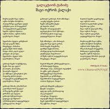

ლეგენდარული ქართველი მწერლის დათო ტურაშვილის წიგნი ქალაქ ჭიათურაზე
პოეტთა მეფის გალაკტიონის ლექსი შავ ოქროს ქალაქზე. საინტერესოა ის ფაქტი რომ გალაკტიონის მეუღლე ქალბატონი ოლია ოკუჯავა სწორედ ქალაქ ჭიათურაში განამწესეს პედაგოგად. ასე რომ რკინიგზის სადგურზე აუცილებლად ნახავთ დიდი გალაკტიონის ნაფეხურებს
ჭიათურის ასი წლისთავთან დაკავშირებით გამოცემული წიგნი, რომელიც ასახავს ჭიათურის განვითარებს ისტორიას, მრეწველობასა და კულტურას.
საინტერესო სტატია: ვაჟა-ფშაველა ჭიათურაში